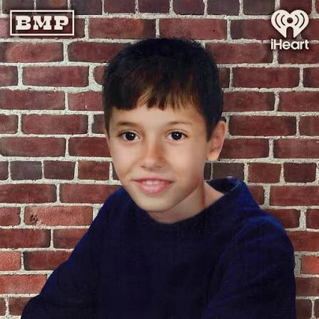

By Carolina Pinto

TV SHOW : The Body the series
The Body is a Netflix Tv show released this year. It is a coming-of-age psychological drama/ supernatural horror series that follows a girls dance group at a catholic highschool. The show is only 8 season but packed with an interesting story line that keeps you hooked the whole time.
https://en.wikipedia.org/wiki/The_Body_(TV_series)
MUSIC : Headphones On
Headphones on is a song writen and sang by Addison Rae in 2025. This song has a mix of Pop, R&B, trip hop, and a strong 1990s retro influence. The song is super fun and playful with a youth beat. One of my favourite songs to listen to , when I'm happy or sad it just brings me joy, reminding me that things will get better and to be happy with the life your living.
https://en.wikipedia.org/wiki/Headphones_On

PODCAST : Out of Character
Out of Character is a comedy podcast starting Hamzah Al-Emad and Martin Andrijasevic, two internet personailities. The talk about their lives, the world the internet world, etc. I've been listenign to this podcast for years but just got back into it. Listening to them always puts a smile on my face with their while driving to school.
https://open.spotify.com/show/6AHUtKbZQfEadcnzjHa0t9